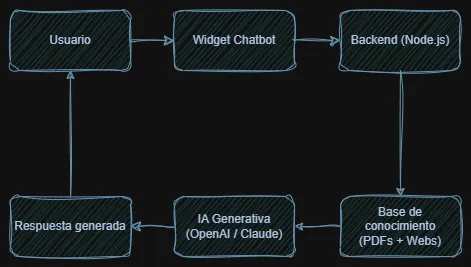
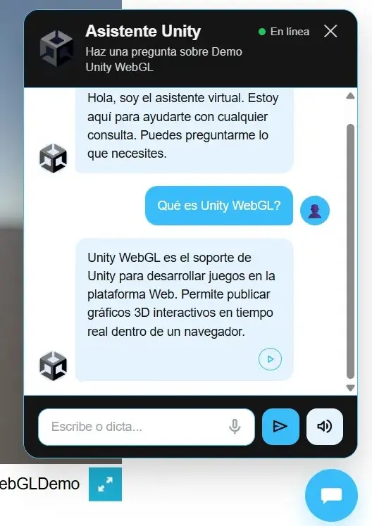

Chatbot IA Reutilizable
Chatbot basado en IA capaz de responder preguntas utilizando información obtenida desde páginas web y documentos PDF.
Proyecto desarrollado con Node.js, Express y modelos de IA generativa. El sistema permite integrar un asistente virtual en diferentes páginas web mediante un widget reutilizable y configurable.
Incluye lectura de PDFs, análisis de páginas web, búsqueda contextual, generación de respuestas con IA, funciones de voz y despliegue en Render.
Funcionamiento general
El chatbot utiliza una base de conocimiento generada a partir de páginas web y documentos PDF. Cuando el usuario realiza una consulta, el sistema busca la información más relevante y genera una respuesta utilizando IA.
El sistema fue diseñado para ser reutilizable y poder integrarse en distintos entornos. Actualmente puede utilizarse en páginas web tradicionales, sitios desarrollados con WordPress y aplicaciones exportadas mediante Unity WebGL.
- Lectura de páginas web.
- Procesamiento de documentos PDF.
- Búsqueda contextual de información.
- Integración con modelos de IA (OpenAI y Claude).

Widget reutilizable
El asistente se integra mediante un widget reutilizable que puede añadirse fácilmente a distintos proyectos sin modificar el backend. La misma solución se ha utilizado en este portfolio personal, en sitios web desarrollados con WordPress y en aplicaciones Unity exportadas como WebGL.
- Botón flotante de acceso rápido.
- Ventana de conversación integrada.
- Configuración dinámica por proyecto.
- Diseño adaptable para escritorio y móvil.
- Integración mediante unas pocas líneas de código.
Esta página utiliza una instancia real del chatbot, por lo que puede probarse directamente desde el botón flotante situado en la esquina inferior derecha.

Funciones destacadas
El sistema incorpora diferentes funcionalidades orientadas a mejorar la experiencia del usuario y facilitar el acceso a la información.
- Consultas sobre documentos PDF.
- Consultas sobre páginas web.
- Búsqueda contextual de información.
- Respuestas generadas con IA.
- Reconocimiento de voz.
- Lectura de respuestas por voz.
El asistente puede combinar información procedente de diferentes fuentes para ofrecer respuestas más precisas y adaptadas al contexto de cada proyecto.
Retos técnicos y soluciones
Durante el desarrollo del chatbot fue necesario combinar distintas tecnologías para procesar información, generar respuestas y ofrecer una integración sencilla en diferentes proyectos.
- Procesar información procedente de PDFs y páginas web.
- Construir una base de conocimiento reutilizable.
- Integrar modelos de IA para la generación de respuestas.
- Diseñar un widget reutilizable compatible con distintos entornos web.
- Desplegar el backend y mantener la configuración remota.
Este proyecto permitió aplicar conocimientos de desarrollo backend, integración de APIs, procesamiento de documentos y creación de componentes reutilizables para aplicaciones web.